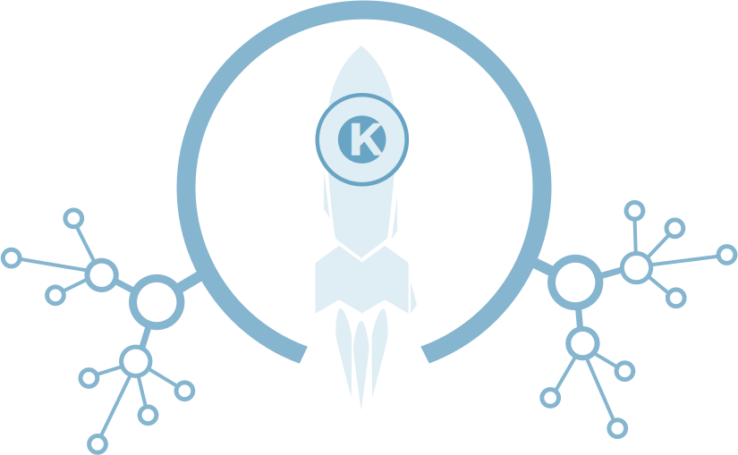

КЛАСТЕРЫ
тренд развития современной экономики

Итоги образовательной программы
Дата: декабрь 2014 года
Место проведения:
Академпарк
Организатор:
Центра кластерного развития Новосибирской области
подробнее